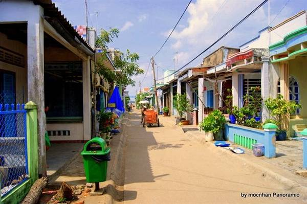
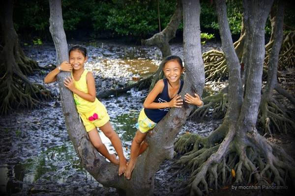
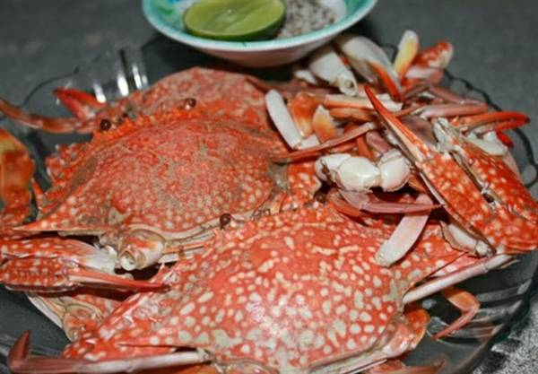
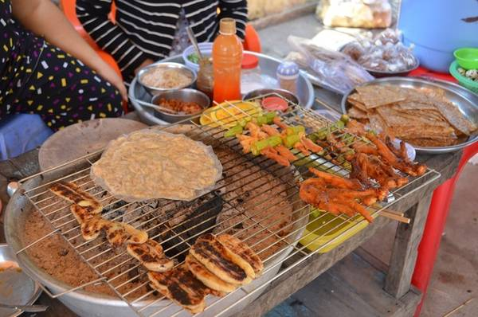

Du lịch đảo Thạnh An: Cẩm nang từ A đến Z
Đảo Thạnh An không phải là một địa danh du lịch, nhưng đối với những ai mê du lịch bụi thì đây cũng là một địa chỉ mới đáng để bỏ túi.
| Mục Lục |
|---|
1. Đảo Thạnh An ở đâu?
Cách trung tâm TP.HCM hơn 70 km về phía Đông, xã đảo Thạnh An nằm hoàn toàn tách biệt với huyện Cần Giờ và TP.HCM, đây chính là điểm đến lý tưởng cho những ai yêu thích cuộc sống đơn sơ mộc mạc vùng sông nước, lại có thể đi về trong ngày không mất nhiều thời gian.
Xã đảo Thạnh An nhìn từ trên cao
Một con đường yên tĩnh trên đảo.
Đến đây, du khách sẽ khám phá một vùng thiên nhiên hoang sơ, yên bình, dưới sự chào đón nồng hậu của những người dân làng chài hiền hòa, hiếu khách, thưởng thức các loại đặc sản đậm đà hương vị biển.
Cầu cảng Thạnh An
2. Di chuyển đến đảo Thạnh An
Bạn có thể đến đảo Thạnh An bằng các phương tiện như: Ô tô, xe máy và xe bus.
Nếu đi bằng xe máy và ô tô: Chạy đường Huỳnh Tấn Phát đến phà Bình Khánh, qua phà (vé 3000đ/xe máy/lượt). Sau đó chạy thẳng một đường đến chợ Cần Thạnh rẽ trái, gặp siêu thị Coopmart rẽ phải là đến bến phà.
Nếu đi xe buýt: tại Bến Thành lên xe số 20, dừng ở trạm cuối là phà Bình Khánh, mua vé qua phà 1.000 đồng/người/lượt. Qua phà lên xe bus số 90 (chuyến xe bus duy nhất ra Cần Giờ), kêu lái xe dừng ở bến phà.
Từ bến phà này sẽ có tàu ra đảo Thạnh An và tàu ra biển Vũng Tàu, chú ý để lên đúng tàu.
– Tàu từ đất liền ra đảo: 6h30, 9h00, 10h30, 12h00, 14h00, 17h00
– Tàu từ đảo về đất liền: 6h30, 7h30, 10h30, 12h, 14h, 17h
Đặc biệt, do lượng khách ra thăm đảo tăng đột biến trong thời gian gần đây, nên tàu thường sẽ chạy tăng chuyến vào những ngày cuối tuần.
Giá vé tàu 10.000 đồng/lượt. Tuy nhiên, giờ tàu có thể thay đổi tùy vào tình hình thời tiết, thủy triều…
Ở bến tàu có nhiều chỗ gửi xe máy trong nhà, hoặc bạn cũng có thể gửi xe máy ngay trong siêu thị cạnh bến tàu. Ngoài ra, nếu muốn, bạn cũng có thể gửi xe máy theo tàu ra đảo để tiện khám phá.
Tàu gỗ ra đảo Thạnh An.
3. Đảo Thạnh An có gì thú vị?
Thạnh An không phải là điểm du lịch nổi tiếng, không có những cảnh đẹp khiến du khách phải ngẩn ngơ nhưng bù lại, hòn đảo nhỏ hoang sơ này mang lại cảm giác yên bình, giản dị, cuộc sống của những người dân làng chài hiền lành chăm chỉ quanh năm với nụ cười luôn nở trên môi.
Tận hưởng một cuối tuần tại đảo Thạnh An sẽ mang đến cho bạn một bầu không khí hoàn toàn tách biệt với cuộc sống hằng ngày.
Đảo nhỏ Thạnh An không có nhiều cảnh đẹp lung linh, mà chủ yếu là cuộc sống dân chài chất phác, thanh bình.
Nơi đây là vùng sinh sống một số loài cây đặc trưng của rừng ngập mặn.
4. Khám phá ẩm thực trên đảo
Một chàng trai yêu Sài Gòn của những năm 1965 đã quyết định mở quán Sài Gòn Retro nằm trên đường Trần Quốc Toản để lưu giữ lại hình ảnh Sài Gòn xưa năm ấy.
Nhiều khách quen thường nhắc đến 4 điều sau về Saigon Retro Cafe: những bảng decor với phông chữ bảng hiệu kiểu cũ, những băng cassette và đĩa than, nước uống và cuối cùng là nền nhạc xưa. Phải thú thực quán thường mở những bản nhạc không phải gout phổ thông của giới trẻ, nào là nhạc Trịnh, nhạc Ngô Thụy Miên, những bản tình ca Ngọc Lan, và cả cải lương nữa. Tuy vậy, hầu như chưa thấy khách trẻ nào phàn nàn, thậm chí còn tập quen và dần yêu những dòng nhạc có phần “già dặn” này.
Hiện nay, hàng quán ở Thạnh An đã nhiều hơn trước, tập trung đông nhất ở chợ gần ủy ban xã và rải rác theo con đường chính qua khu dân cư trên đảo.
Ghẹ trên đảo Thạnh An.
Trên đảo bày bán rất nhiều món ăn vặt hấp dẫn.